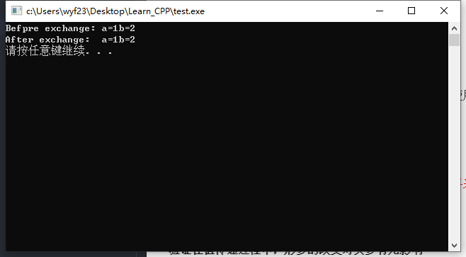
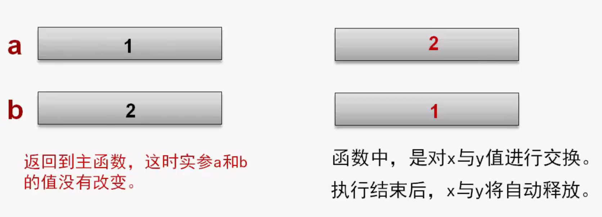
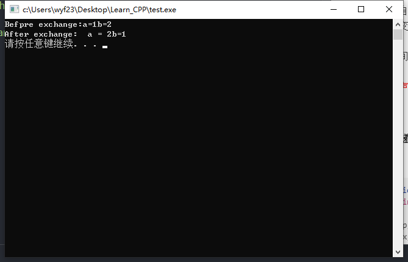

三种传递方式
- 值传递
- 引用传递
- 指针传递
值传递
调用时，将实参的值传递给对应的形参，这就是值传递。
由于形参有自己独立的存储空间，又作为函数的局部变量使用，因此在函数中对形参值的任何修改都不会改变实参变量的值。
好处
减少函数之间的数据依赖，增强了函数自身的独立性。
注意
例
验证在值传递过程中，形参的改变对实参有无影响
示例代码
1 |
|
执行结果

结论
在值传递过程中，改变形参的值，并不会改变实参的值。
值传递过程描述
调用前实参a，b有自己的存储空间，并有初值
调用函数时，为形参x，y分配存储空间，并接收实参的值。

引用传递
引用
引用是一种特殊的变量，它被认为是一个变量的别名。
引用定义的格式如下：
<数据类型> & <引用名>=<目标变量名>;
其中：&为引用（变量）的标志符号，<引用名>是一个标识符。
<数据类型>为<目标变量>的类型。
例如：int a,&b=a;
该例说明了a是一个整型变量，b是一个引用整型变量a的引用，即b是a变量的一个别名。这时，使用a与使用b是等价的。
对引用的说明
- 定一个引用，其实是为目标变量起一个表名。引用并不分配独立的内存空间，它与目标变量共用其内存空间。
- 定义一个引用（变量）时，如果该引用不是用作函数的参数或返回值，则必须提供该引用的初值（即必须提供引用的目标变量名）。
- 使用引用与使用目标变量的效果是相同的。
1
2
3
4
5
6
7int main()
{
int a=2,&b=a;
cout<<&a<<" "<<&b<<endl; //输出变量的地址
cout<<a<<" "<<b<<endl; //输出变量的值
return 0;
}
引用传递
为实现引用传递，这时函数的形参应定义为应用类型变量，而对应的实参应为变量名，该变量将作为引用的目标变量名。
函数调用时，作为形参的引用变量并不分配新的内存控件，它将作为实参变量的别名与其共用内存。
- 使用引用参数，可以直接操作实参变量，从而能够实现通过修改形参的值而达到修改对应实参值的目的
- 通过设置多个引用，可以从函数中带回多个结果值。
说明：
引用作为函数形参，其引用的目标变量默认为调用该函数时对应的实参变量名，所以，在定义函数时，对于引用类型参数不必提供引用的初值。
例
该函数为值传递，形参变化不影响实参变化。
1
2
3
4
5
6
7void swap(int x,int y)
{
int tmp;
tmp=x;
x=y;
y=tmp;
}通过引用参数传递，修改引用参数达到修改实参值的目的。
1
2
3
4
5
6
7
8
9
10
11
12
13
14
15
16void swap(int &x,int &y)
{
int tmp;
tmp=x;
x=y;
y=tmp;
}
int main()
{
int a = 1, b = 2;
cout <, "Befpre exchange:a=" << a << "b=" << b << endl;
swap(a, b); //引用a，b，实际上就是交换a，b的值
cout << "After exchange: a = " << a << "b=" << b << endl;
system("pause");
return 0;
}
结果为
